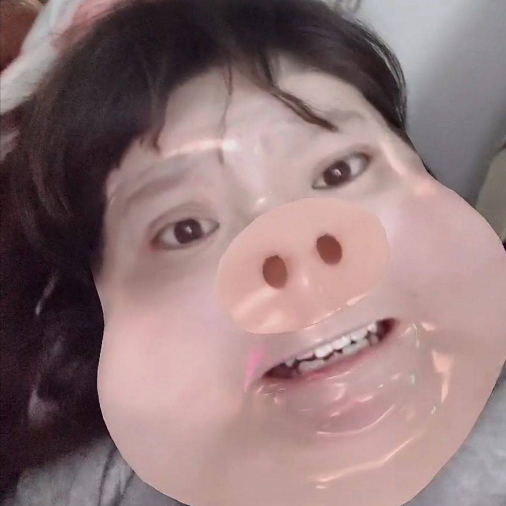
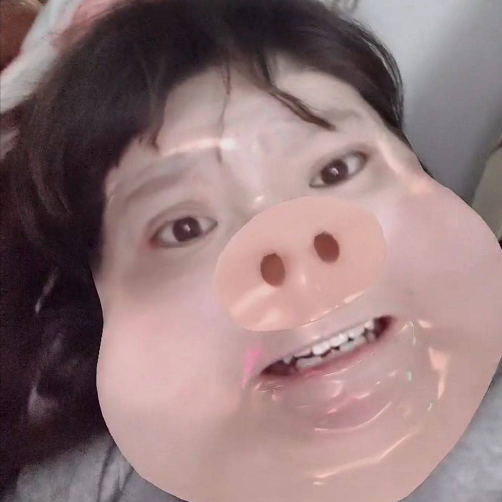

走红原因
她常常会说一些让人觉得匪夷所思却又引人发笑的话，再配上她使用的那些独特的发音，就 形成了个人风格极强的口音。比如“猕猴桃”被她称作“迷hotel”，还有“酸奶蛋糕”被她称为 “孙乃定沟”，油炸鸡米花、草莓、红心火龙果等也都被“重新取了名字”，这种说话方式在后来引起了网友们的模仿，被称为“郭语”

她常常会说一些让人觉得匪夷所思却又引人发笑的话，再配上她使用的那些独特的发音，就 形成了个人风格极强的口音。比如“猕猴桃”被她称作“迷hotel”，还有“酸奶蛋糕”被她称为 “孙乃定沟”，油炸鸡米花、草莓、红心火龙果等也都被“重新取了名字”，这种说话方式在后来引起了网友们的模仿，被称为“郭语”

 
